Assessing Saudi Arabia's oil-and-gas grid against utility-scale solar — with real measurements, worked calculations, and a real audience.
This site documents an individual assessment project built around UN Sustainable Development Goal 7: ensuring access to affordable, reliable, sustainable and modern energy for all. Across eight entries it researches the goal, assesses the current Saudi energy system against a solar-powered alternative with data and calculations, evidences a hands-on energy audit, examines the ethics of the transition, and reports a live awareness session.
The goal, its targets and indicators — and why energy sits underneath every other SDG.
Regional demand, global gaps — the scale of the problem SDG 7 is trying to solve.
Consumption, generation mix and CO₂ — with the numbers worked out, not just quoted.
Sudair, NEOM and the economics of photovoltaics — trade-offs included.
A hands-on home energy audit with a power meter — real readings, real CO₂.
Energy justice — affordability, workers, and fairness between generations.
What I presented, the quiz, the results — evidence that understanding happened.
What I found, what surprised me, and what I now think about the 2030 energy mix.
Targets, indicators and the energy need — Entries 1–2
Current grid vs solar, with calculations — Entries 3–4
Hands-on energy audit with a power meter — Entry 5
Energy justice framework applied — Entry 6
Session with 10 participants + quiz — Entry 7